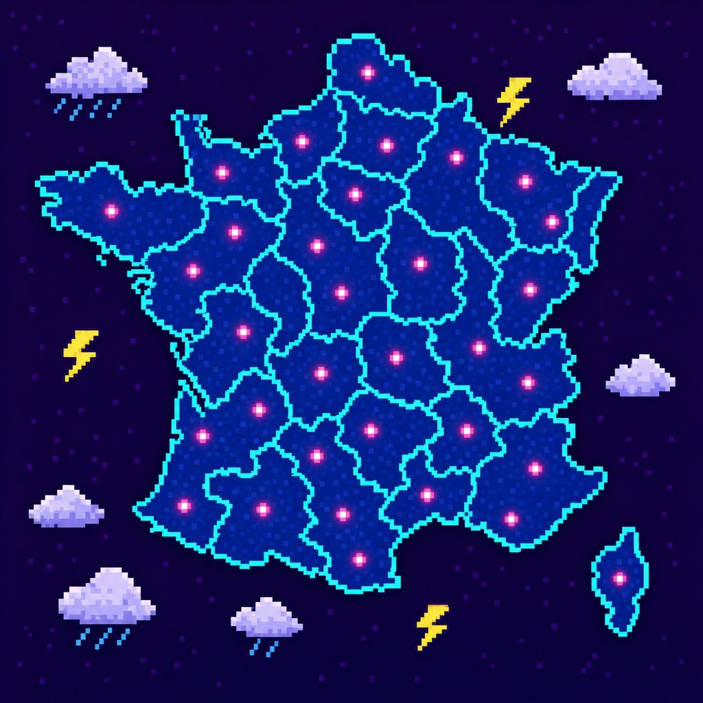
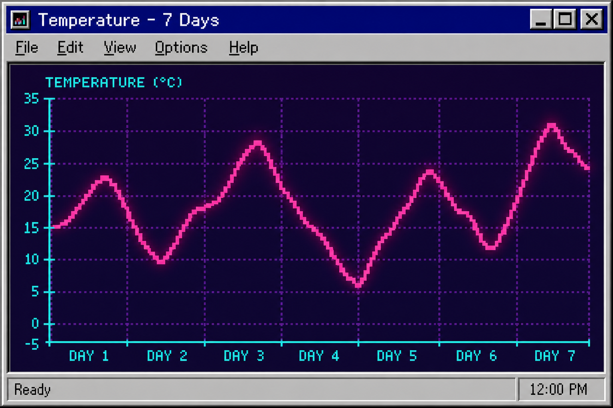

| HEURE | STATION | TEMP | VENT | PRESSION | OBSERVATEUR |
|---|---|---|---|---|---|
| 21:55 | BreizhCell | 16.2 | 61 km/h | 998 | ArcusMan |
| 21:50 | PuyRadar | 13.8 | 44 km/h | 1004 | NimbusLyon |
| 21:44 | GrêleNet | 11.1 | 32 km/h | 1008 | PixelPluie |
| 21:39 | PluvioMax | 18.0 | 78 km/h | 996 | Cévenol95 |
| 21:32 | Orage95 | 19.4 | 27 km/h | 1009 | DataMistral |
| 21:25 | MistralData | 22.0 | 84 km/h | 1001 | FoudreDouce |
| 21:20 | CielBas | 14.5 | 18 km/h | 1012 | StratusKid |
| 21:15 | VentFou | 20.7 | 69 km/h | 999 | RafaleRose |
| 21:10 | LoireFlash | 17.3 | 51 km/h | 1003 | GrainLibre |
| 21:05 | AlpesNord | 9.8 | 36 km/h | 1010 | NeigeBit |
| 21:00 | ArmorPluie | 15.6 | 73 km/h | 997 | BreizhCell |
| 20:55 | PicRadar | 12.0 | 41 km/h | 1006 | Altocumulus |
| 20:50 | SeineData | 18.6 | 22 km/h | 1011 | Orage95 |
| 20:45 | GaronneWx | 21.2 | 58 km/h | 1000 | SudOuest |
| 20:40 | VosgesNet | 10.5 | 29 km/h | 1013 | BrumeKid |
| 20:35 | JuraObs | 8.9 | 34 km/h | 1015 | GelPixel |
| 20:30 | VendéeVent | 16.9 | 88 km/h | 995 | RafaleRose |
| 20:25 | Morvan95 | 13.4 | 47 km/h | 1007 | PluvioMax |
| 20:20 | Camargue | 23.1 | 39 km/h | 1002 | MistralData |
| 20:15 | Lorraine | 12.7 | 25 km/h | 1014 | StratusKid |